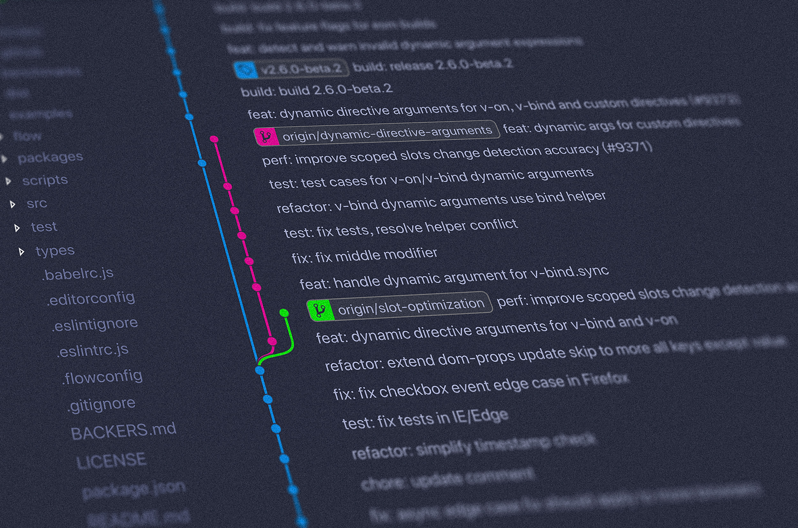

Git-Basic-Notes
Friendly coding reminders:
- The first rule of Coding Bootcamp is to not talk about Coding Bootcamp! :)
- In order to copy someone else's repository, you must first Fork it via Github/Gitlab
- Next, you must clone it in order to download a repository to your computer
- You'll also need to launch git on your computer to start making changes locally to your recently cloned repo along with Visual Code

Git bash Navigation & Visual Studio Code
- First, start by Forking the repository via Github
- Then select Code within Github/Gitlab and copy Clone address
- Launch Git (Git Bash) locally and ensure that you're currently in the directory where you'd like this new repo
- You can type pwd to verify your current directory
- Type cd and the directory that you want to navigate to (if needed)
- Once ready, type the following command and paste the address from step 2:
- git clone github@github.com:name/projectname.git
At this point you have copied the repo files from Github to your local machine (laptop/pc).
Next step involves moving into the new directory that you have just copied.
Git bash navigation & Visual Studio Code:
- Type ls
- Copy the name of the newly copied directory, which will match the name of the repo
- Type cd and paste the name of of the new directory (PC users, right click mouse button)
- It's time to edit with VS Code, and you can edit all of the files by typing:
- code .
- With VS Code launched, you're now able to see all of the files available for edit
- Don't forget to save your work
Uploading changes back to Github
- Using Git bash, select the files you want to send back to Github
- To add all modified files to Github, simply type:
- git add --all
Commit Time:
- Now let's Commit the files and include a description of the Commit
- git commit -m "description"
Push it!
- Let's make it official by Pushing your files to Github by typing:
- git push -u origin master
Pushing an existing repository
- First, let's initialize your new local repository
- git init
- Connect to existing repo from Github
- -Remember to Clone the existing github address
- git remote add origin git@github.com:name/project-name.git
- Next, add of your new repo files by typing:
- git add --all
- Now let's add your first Commit
- git commit -m "first commit"
- Finally, push your local files to Github
- git push -u origin master